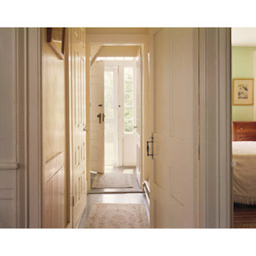
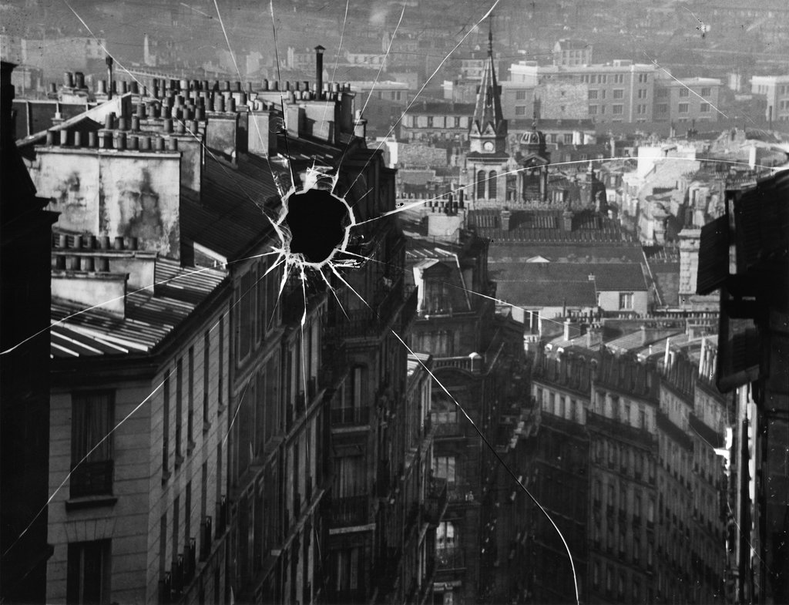

Ways of Seeing
John Berger
It is hard to define exactly how the words have changed the image but undoubtedly they have. The image now illustrates the sentence"
"What wants to be made accessible becomes less accessible"
"Availabilty implies passitivty"
"Nakedness reveals itself. Nudity is placed on display"
"The dream is always personal to the dreamer. Publicity does not manufacture dream. All that it does is the propose to each one of us that we are not yet enviable - yet could be."
Taking my Time by Joel Meyerowitz
The world continues outside the frame…. it leaves certain things ambiguous or unspoken but impinging. And I believe that that recognition as well as the power of the frame to put disparate unrelated things together suddenly … in your frame, its context
“Broken Plate, Paris” 1929 by Andre Kertesz
